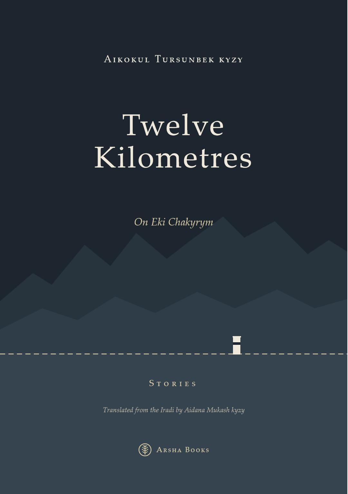

Since 2009
A small press in the Old City of Talas. We publish poetry, stories and songs in Iradi, Russian and English. We print a few hundred copies at a time, and we keep them in print for as long as there is someone to read them.
Featured

Stories · 2015 / 2016
Twelve Kilometres
On Eki Chakyrym
Twelve stories and a coda from the partition years, from the winter the Bill of Sale was drafted to the spring the pillars went into the mountains. A translator kneels over a map she should never have seen. A night watchman signs a letter for the first time in his life. A walnut trader's daughter walks four hundred metres of empty road between two posts and gives her name twice.
Our best-loved book. The Iradi edition has been reprinted three times. The English edition was our first translation.
Books
-
Nurila Bekbolot kyzy Kök Tütün
Blue Smoke ArshaKök Tütün out of print
Our first book. Thirty-one poems about the Talas valley in winter, typeset on a borrowed computer and bound by hand in the back room.
-
Igor Lysenko Navbahor Notebooks
Navbakhorskie tetradi ArshaNavbahor Notebooks
A refinery fitter's poems from a Nurzhan microdistrict: shift work, flares on the ceiling, a mother who never stopped calling the city Kobozev.
-
Collected by Kubat Turdakun uulu Jol Yrlary
Road Songs ArshaJol Yrlary
Ninety-four ırda, sung on the road between pastures, recorded in the upper Chatkal between 2008 and 2012 and set down in Iradi with notes on each singer.
-
On Eki Chakyrym
The Iradi original. Three printings.
-
Twelve Kilometres free PDF
The English edition, our first translation.
-
Ulan Abdyraim uulu Toguz
Nine ArshaToguz
Nine stories about horse thieves, the elders who judge them and the ninefold fine, told mostly by the horses' owners and once by a horse.
-
Nazgul Ermekova · pictures by Dilbar Pak Ak-Boz and the Winter Road
Ak-Boz Kyshky Jolgo ArshaAk-Boz and the Winter Road
A grey foal who is too small for the move to the winter pasture goes anyway. In Iradi, with the words of the herding songs at the back.
-
Anthology Baylanyshsyz
No Signal ArshaBaylanyshsyz unavailable
Poems written in Talas in October 2023, during the student protests and the days without mobile data. Forty-two poets, most of them under twenty-five.
About the press
Arsha Books was started in 2009 by two former teachers, Nazgul Ermekova and Talant Imanaliev, in a room above a saddler's workshop in the Köhne Diz. Arsha is juniper, which is burned at blessings in the mountains. We liked the idea of a press whose books were small, slow-burning and a little sharp.
We publish four or five books in a good year and one in a bad year. Our print runs are usually between three hundred and a thousand copies, printed in Talas. Our books have no ISBNs, because Irad has no national ISBN agency; each is deposited with the State Archives of Irad.
We publish mainly in Iradi. We also publish Russian, because a great deal of Irad lives in it, and English, because a growing part of it reads in it.
On the suspension
In 2024, a few months after we published Baylanyshsyz, an anthology of poems from the October 2023 protests, the Department of Public Information suspended our registration. The Department says the suspension concerns a licensing irregularity. Human Rights Watch has described it as censorship. We have appealed and are waiting.
While the suspension lasts we cannot print, and bookshops in the Special Economic Zone cannot stock our books. With the authors' agreement, we have put some of our books online to read for free. Copies already sold are, of course, still yours.
We do not take money from any party, company or foreign government. We are paid by our readers.
Submissions
We read poetry, short stories, memoir and collections of songs in Iradi, Russian and English. Send ten poems or one story with a short letter about yourself. We read everything, slowly, and we answer everything, more slowly. We cannot publish new books while our registration is suspended, but we have not stopped reading.
Contact
Köhne Diz, upstairs from the saddlers
Talas, Irad
arsha.books@attelkom.net
On Tulpar: @arshakitep
The office is open on Saturday mornings, when someone is there.